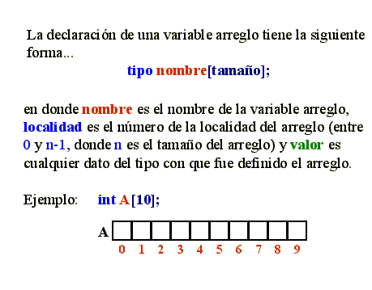
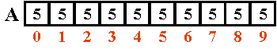

|
|
| . |

Objetivo:

Forma de trabajo: Actividad grupal

Tiempo estimado: 90 minutos 
Instrucciones: 
1. El procedimiento inicializaVector, que recibe un vector de 10 valores enteros y un valor entero x. El procedimiento deberá llenar cada localidad del vector con el valor de x.
Suponiendo que x = 5  Ejemplo:3. Implementa el procedimiento imprimeVector, que recibe un vector de 10 valores enteros. El procedimiento deberá desplegar en pantalla el contenido del vector.captura_Vector(vector);Al terminar el procedimiento el vector tendrá almacenados todos los números introducidos por el usuario en ese mismo orden. 4. Implementa la función sumaImpares, que recibe un vector de 10 valores enteros. La función regresa la suma de todos los elementos impares del vector. Ejemplo:Suponiendo que el vector tiene asignados los siguientes valores: 5. Implementa el procedimiento sustituyeVector, que recibe tres parámetros, un vector de 10 valores enteros y un valor entero X y un valor Y. El procedimiento debe sustituir las ocurrencias de X en el vector por el valor de Y. Ejemplo:6. Implementa el procedimiento modificaVector, que recibe dos parámetros, un vector de 10 valores enteros y un valor entero X. El procedimiento debe de multiplicar cada localidad del arreglo por X y el resultado de la multiplicación asignarla a su respectiva casilla.sustituyeVector(vector, x, y); Ejemplo:Suponiendo que el vector original tiene asignados los siguientes valores: 7. Implementa la función mayorVector que recibe un vector de 10 valores enteros. La función deberá regresar el elemento de mayor valor contenido en el arreglo. 8. Implementa el procedimiento menu, que despliegue el siguiente menú en pantalla:
1. Inicializa vector 
Especificaciones de entrega:
Instrucciones para enviar tus archivos por Canvas:
|